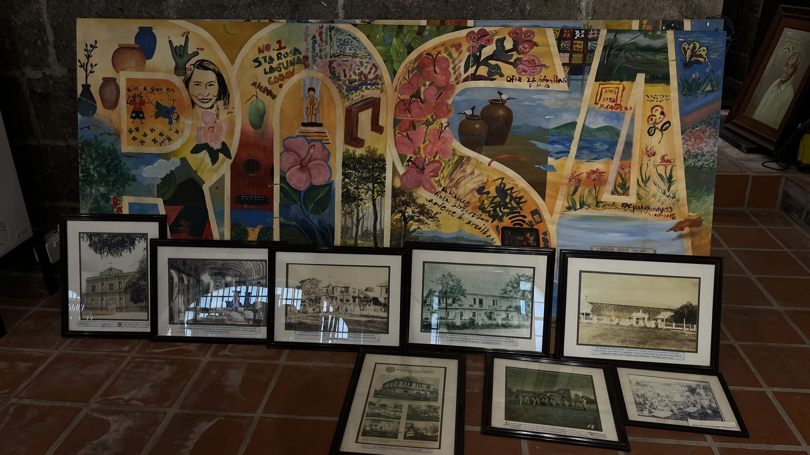

Stories, objects, and memories preserved from the heart of Santa Rosa.

We're from BSIT 3-2, and this is our shared gallery — ten pieces we chose to slow down for, look at closely, and talk through together. This page is a vessel for the impressions they etched upon us.
Click any piece to open its title, description, and our personal analysis.
"Put your mind and soul on your canvas no matter what others say."